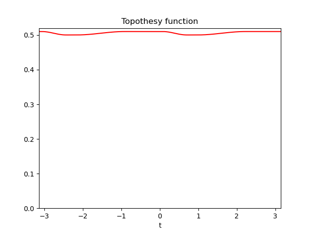
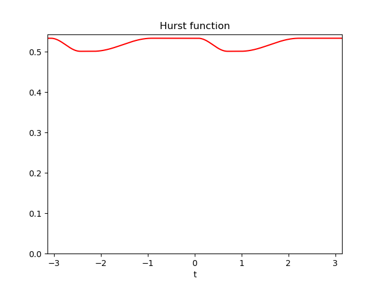
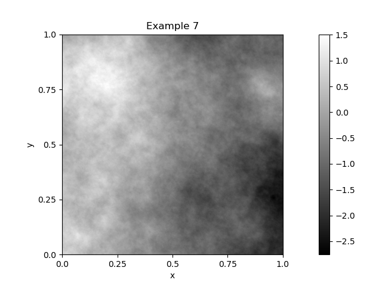
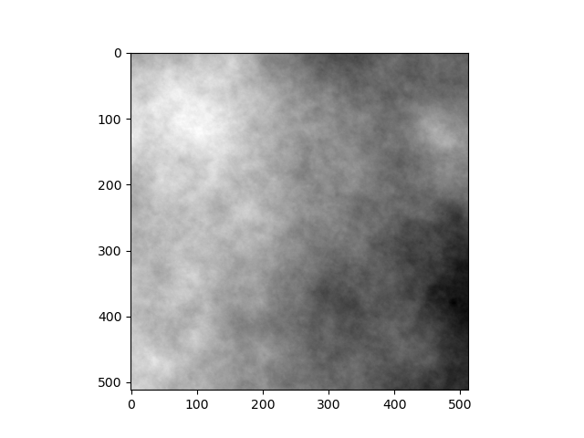

Note
Click here to download the full example code
Export the data.
Code author: Frédéric Richard <frederic.richard_at_univ-amu.fr>
- 
- 
- 
- 
Load an existing protocol.
Protocol:
Directory:../data/SimulationSet_001/
Number of examples: 10
Image size: 512 x 512
Hurst function:
Number of parameters: 2
Step constant sampling: unifmin
Step interval sampling: nonunif
Minimal Hurst value: 0.05
Maximal Hurst value: 0.95
Minimal interval lenght between steps: 0.03
Number of turning bands: 500
Example 7
Hurst-related parameters:
min = 0.50, argmin length = 0.27 and center = 0.84
Exported features:
[0.50100842 0.26874819 0.83641066]
# Import a simulation protocol.
from afbfdb import protocol
from matplotlib import pyplot as plt
from numpy import zeros, concatenate, savetxt, uint16, amin, amax, arange
from imageio.v2 import imsave
import os
# directory to save examples.
home_dir = "../data/"
data_dir = home_dir + "SimulationSet_001/"
data_out = home_dir + "SimulationSet_001-export/"
# Load the protocol.
simu = protocol(data_dir)
n = simu.nbexpe
simu.ShowExample(7)
# Export the data in a numpy array format.
images, features = simu.ExportData(0, n-1)
# Show an image and its features.
plt.figure()
plt.imshow(images[7, :, :], cmap="gray")
plt.show()
print("Exported features:")
print(features[7, :])
if os.path.isdir(data_out) is False:
os.mkdir(data_out)
# Export features in csv format.
features = concatenate((arange(0, n).reshape((n, 1)), features), axis=1)
header = 'example number, Hurst index, argmin set length, argmin set center'
savetxt(data_out + 'features.csv', features, delimiter=',', header=header)
# Export images in png format.
m = images.shape[1:]
glmax = 2**16 - 1
image = zeros(m, dtype=uint16)
for expe in range(n):
ide = simu.SetExampleNumberStr(expe)
# Conversion of the image into uint16 by normalization.
immin = amin(images[expe, :, :])
immax = amax(images[expe, :, :])
imrange = immax - immin
image[:, :] = (images[expe, :, :] - immin) / imrange * glmax
# Save the image.
imsave(data_out + "image-" + ide + ".png", image)
Total running time of the script: ( 0 minutes 1.416 seconds)